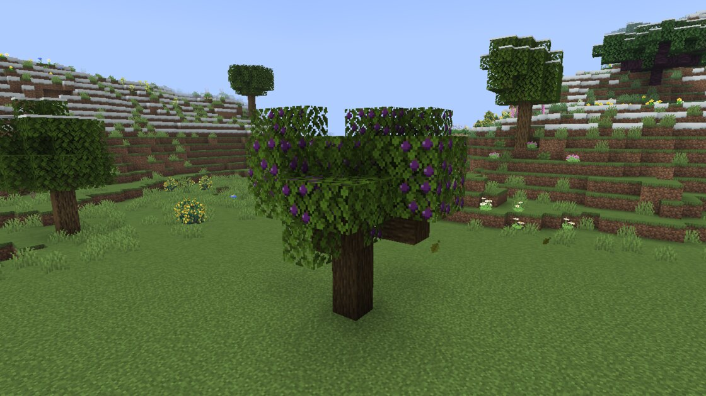
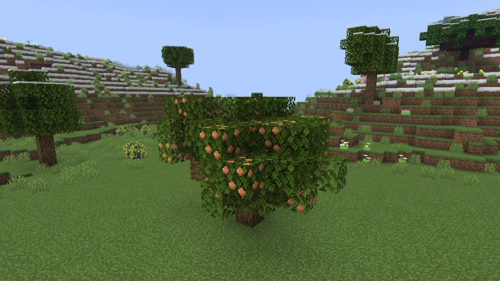
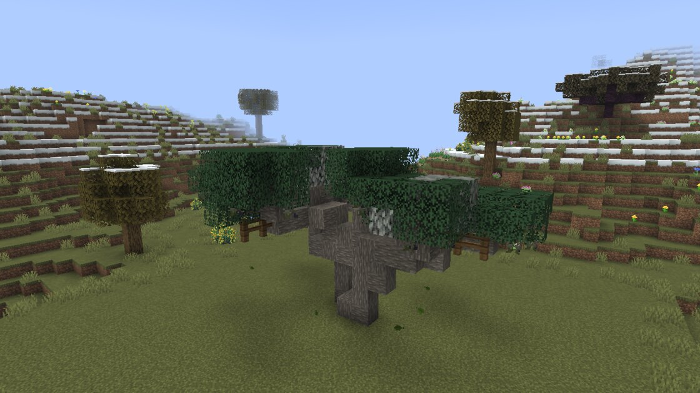
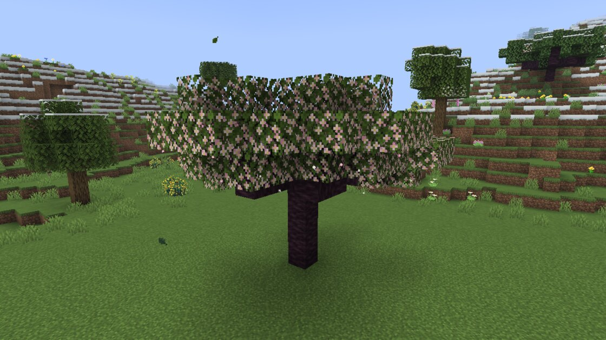
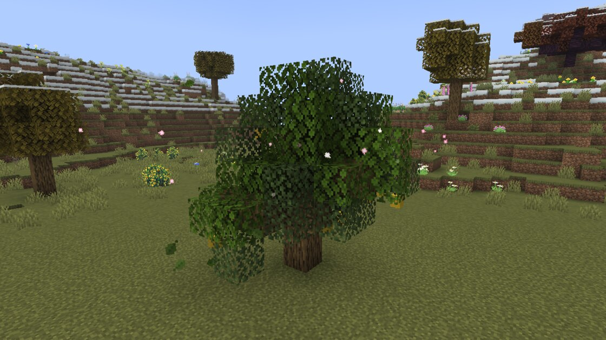
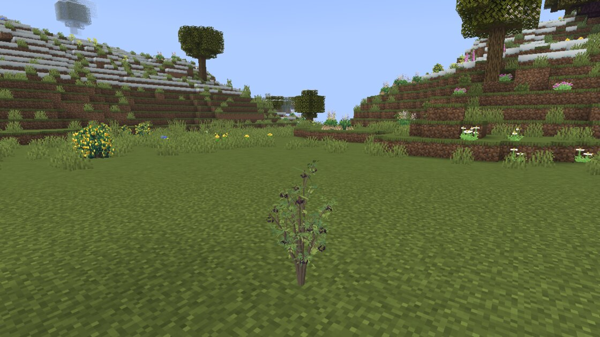

Apple
Ripe: late summer to late autumn. Grows wild: meadows, flower forests, plains and forests (any of the apple varieties).
SpringSummerAutumnWinter
Fruit trees blossom, need pollinating, set fruit and ripen with the seasons. The warm-country trees (lemon, mandarin, olive and avocado) are living trees: plant one and it keeps growing, and their fruit hangs from the branches. Their wild ancestors are ancient giants.
blossom green fruit ripe resting
Ripe: late summer to late autumn. Grows wild: meadows, flower forests, plains and forests (any of the apple varieties).

Ripe: late summer to late autumn. Grows wild: plains and forests, a little cooler: birch woods, windswept forests.

Ripe: mid summer to early autumn. Grows wild: meadows, flower forests, forests and dark forests.

Ripe: early summer to mid summer. Grows wild: cherry groves, flower forests and meadows.

Ripe: mid summer to late summer. Grows wild: savannas and sunflower plains.

Ripe: early spring, and late autumn to late winter. Grows wild: sparse jungles, savannas and badlands.

Ripe: early spring, and mid autumn to late winter. Grows wild: a rare old giant in the savanna hills.

Ripe: mid autumn to late winter. Grows wild: a rare old giant in sparse and bamboo jungles.

Ripe: late autumn to mid winter. Grows wild: a rare old giant on windswept savannas, savanna plateaus and wooded badlands.

Ripe: early autumn to late winter. Grows wild: a rare old giant in jungles.


